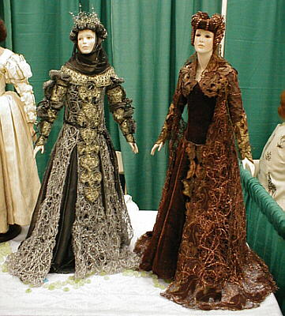

Santa Fe 2000 Doll Show - Page 6

My very favorite doll in the entire show.....this little fellow was so miserable looking, he literally begged for attention. Created by Joseph Nieminski from paperclay, this baby was authentic, down to the last detail. Even his shoes were recreated from the artists original baby shoes.

Breathtaking costuming on some beautiful dolls.
Joyce Patterson's bronze medal winners in the "tableau" category.
This "mystery woman" is ready for the traditional Santa Fe Doll Art costume ball.
When asked about the costume, her comment was,
"The skirt is authentic.....it belonged to my grandmother in the 1930's in Hungary.
She really was part gypsy."
"The rest of it is just cheap junk."